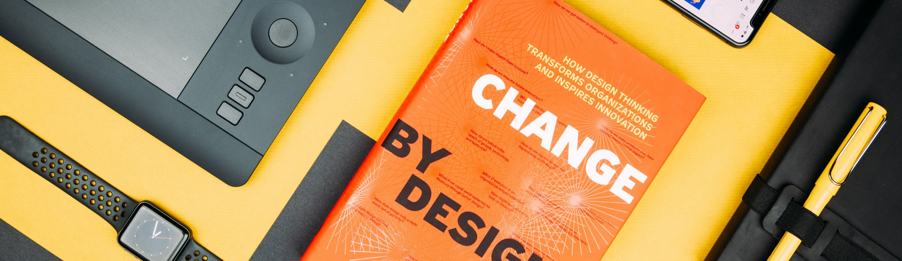

ABOUT
デジタルの力で、社会を変える。
デジタルの力で、社会を変える。
メディアの力で、社会を想像する。
映像・音楽・画像のデジタル技術を集結させ、
コンピュータを通して情報をデザインする学問です。
FEATURE

学科の特色
{{ cel.title }}
NEWS
最新情報
{{ news.date }}
{{ news.category }}
{{ news.text }}
EVENTS

イベント情報
{{ event.subtitle }}
{{ event.title }}
{{ event.text }}
CURRICULUM
カリキュラム
グラフィックデザイン、3DCG、UI/UXデザイン、
映像、モーショングラフィックス、アニメーションを中心としたカリキュラム構成。
主な就職先
広告・デザイン
株式会社こーこく、株式会社デザーIN、株式会社つたわる、Yagooo!株式会社
ITサービス株式会社アイティーS、Serviceあい株式会社、株式会社イトース、AITII株式会社
情報機器・メーカー株式会社インフォKL、株式会社エムエヌゼロ、株式会社いちにっさん、メイクR株式会社 …… ほか
{{ year.subtitle }}
{{ year.title }}
{{ year.text }}
取得できる資格
中学校教諭一種免許状（情報/美術）、高等学校教諭一種免許状（情報）、
情報処理技術者試験（基本/応用）、CGクリエイター検定、CGエンジニア検定、Webデザイナー検定、マルチメディア検定
GRADUATE SCHOOL
